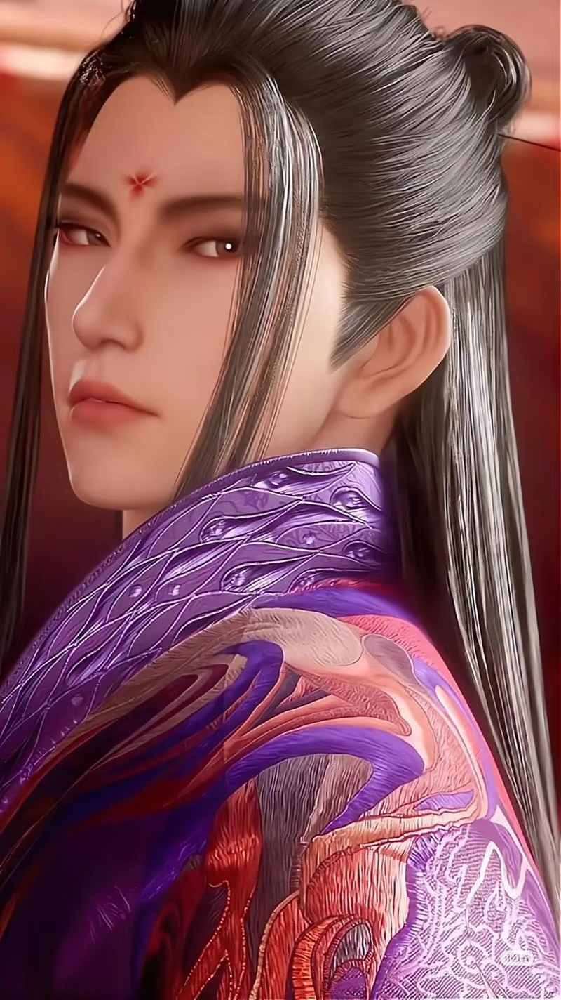

《画江湖之不良人：天罡传》讲述了唐朝国师袁天罡传奇一生的故事。作为不良人的最高统帅，他身负长生不老之术，守护大唐江山三百年之久。
影片以倒叙手法展开，从武则天时期开始，展现了袁天罡如何从一个普通道士一步步成为权倾朝野的大唐国师。在历史的洪流中，他见证了贞观之治的辉煌，经历了安史之乱的动荡，最终在唐末乱世中建立起神秘组织"不良人"。
电影深度挖掘了袁天罡与李世民、武则天、李淳风等重要历史人物的复杂关系。特别是他与挚友李淳风从相知相惜到理念分歧的动人故事，揭示了袁天罡选择长生不老背后不为人知的痛苦与孤独。
随着剧情推进，观众将跟随袁天罡的视角，见证大唐王朝由盛转衰的历史进程，揭开龙泉宝藏的起源之谜，以及不良人组织建立的初衷。影片结尾巧妙衔接TV动画主线剧情，解释了袁天罡为何执着于寻找李唐血脉、扶持李星云复国的深层原因。
作为《画江湖之不良人》系列的首部独立电影，《天罡传》以宏大的历史背景、精湛的武打设计和深刻的人物刻画，为观众呈现了一部兼具史诗感与人文深度的武侠佳作。

